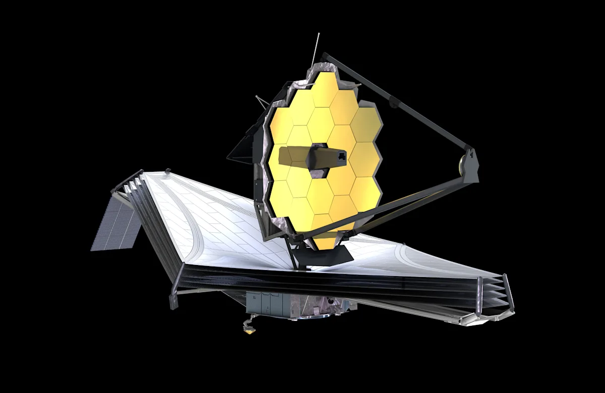

Телескоп Джеймса Уэбба раскрыл тайны сверхмассивных черных дыр

Космический телескоп Джеймса Уэбба сделал сенсационное открытие — он обнаружил ранее неизвестные свойства сверхмассивных черных дыр в центрах далеких галактик. Ученые получили уникальные данные о том, как эти гиганты поглощают материю и влияют на формирование звезд

Наблюдения показали, что черные дыры не только уничтожают все вокруг, но и создают мощные потоки энергии, которые могут замедлять или даже останавливать рождение новых звезд в галактиках. Особенно удивило ученых то, что некоторые черные дыры оказались активнее, чем предполагалось — они "включаются" и "выключаются" с периодичностью в несколько миллионов лет.
"Это как смотреть на сердце галактики в рентгеновских лучах, — объясняют астрономы. — Мы впервые видим процессы, которые раньше могли только предполагать".
Открытие меняет представление о том, как развиваются галактики и какую роль в этом играют черные дыры. Возможно, именно они — главные дирижеры в космическом оркестре звездообразования.